|
|
| ascidians text index | photo index |
| Phylum Chordata | Subphylum Tunicata/Urochordata | Class Ascidiacea |
| Orange
lobed ascidians awaiting identification* Family Styelidae updated Nov 2019 Where seen? These bright orange blobs are sometimes seen on coral rubble and other hard surfaces on our Northern shores. Usually near the mid-water mark. Features: 5-10cm. Irregular blobs forming on coral rubble and big boulders. Usually bright orange. Out of water, this colonial ascidian appear as slimy layers. When submerged in water, it may expand into lobes or 'fingers' or mounds. Individual little zooids can be seen, each with a tiny hole, with a few, much larger holes among them. On the Biodiversity of Singapore website, photos of similar looking animals include Botryllus sp. and others in the Family Styelidae. It's hard to identify ascidians without close examination of small features. On this website, they are grouped by large external features for convenience of display. |
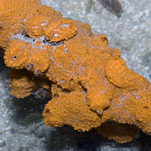 Chek Jawa, Jul 05 |
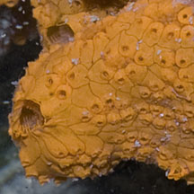 |
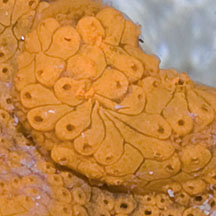 |
|
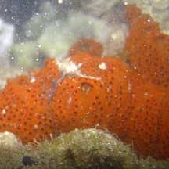 Beting Bemban Besar, May 10 |
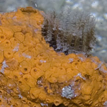 Some kind of animal embedded in the ascidian. |
*Species are difficult to positively identify without examination of internal parts.
On this website, they are grouped by external features for convenience of display.
| Orange lobed ascidians on Singapore shores |
On wildsingapore
flickr
|
| Other sightings on Singapore shores |
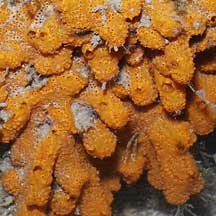 Chek Jawa, Jun 05 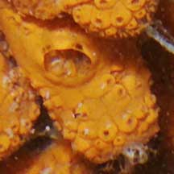 |
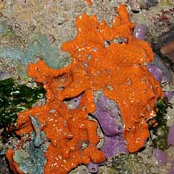 Pulau Sekudu, Jul 08 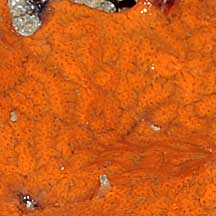 |
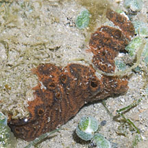 Pulau Semakau, Aug 11 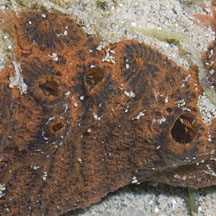 |
Links
|